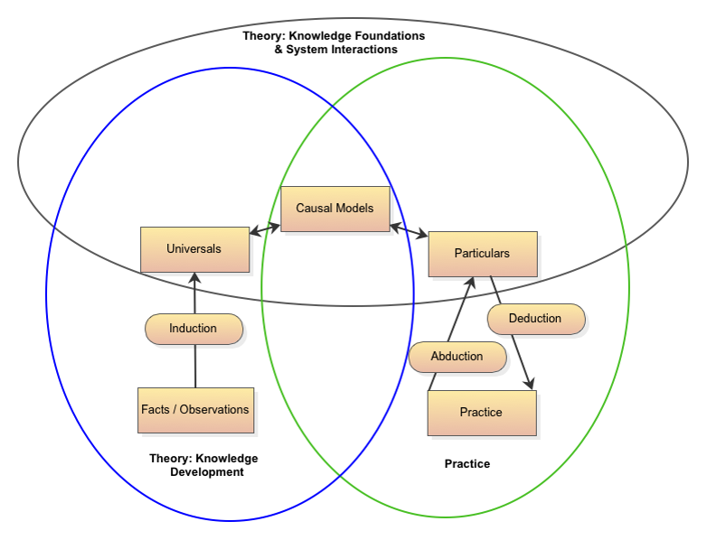

Marked quadriceps weakness. Stable cardiovascular response. Preserved balance.
Clinical Inquiry I · 2026
Causal Models
Representing population knowledge and reasoning about an individual patient
From what we know to what we think is happening
↓ Download PDF
population
patient
Opening problem
Same outcome. Same cause?
same measured result
6MWD ↓
Adequate isolated strength. Early dyspnea. Abnormal exertional response.
Would you expect the same explanation or the same intervention?
What you already bring
ClaimsAn association is not, by itself, evidence of causation.
ConditionsCauses operate through mechanisms and within contexts.
RealityWhat we observe does not exhaust what occurs or what can generate events.
ModelsEvery analysis presupposes some account of the causal structure.
Back to the opening problem: the same 6MWD invites different counterfactuals.
Had quadriceps weakness been absent, would the 6MWD still have been reduced?
Had exertional dyspnea been absent, would the 6MWD still have been reduced?
Had each patient received strengthening, would each patient have improved?
A counterfactual evaluates a specified causal contrast. The observed outcome alone does not tell us which contrast is clinically relevant.
The population-to-patient problem
What remains unresolved?
Research builds the model
Accumulating studies slowly expand and revise how well it represents population knowledge.
builds→revises
Empiricalobserved events
Actualoperative mechanisms
Realgenerative mechanisms
uses→findings may revise ←
Clinical reasoning uses the model
Patient evidence constrains which represented mechanisms could be operative now.
Still unknown: which causal configuration is operative in this patient?Both sides can modify the same model. Research primarily builds it; clinical reasoning primarily uses it.
Today's next step
From observations to causal diagrams to patient-specific explanation
Models4PT
Represents causal claims together with mechanisms, evidence, context, provenance, uncertainty, and disagreement.
Clinical instantiation
Uses generic causal knowledge and current patient evidence to construct a provisional patient-specific explanation.
The causal model represents population knowledge that constrains patient reasoning. It does not determine the answer.
Historical foundation
Clinical inquiry diagram
How should knowledge move between research and practice?

Reading the 2015 logic
Clinical inquiry moves between particulars and universals
particularsobservations
→
scientific inquiryresearch + statistics
→
universalspopulation causal knowledge
→
clinical reasoningthis patient
Inductionparticular observations → general claims
Deductiongeneral knowledge → expected findings
Abductionfindings → best current explanation
Practice to researchclinical experience→patterns + anomalies→candidate claims + questions→structured research→population knowledge
A clinical encounter may be structured for patient care. Clinical experience as a whole is not structured to support population inference.
Generic causal model
A model is a structured set of claims
An epistemological representation of the causal structure believed to characterize a class of systems or patients.
Adapted from Collins, 2026 preprint
- Nodes
- variables or concepts selected for the purpose
- Arrows
- candidate claims about causal direction or influence
- Paths
- possible mechanisms and competing explanations
- Graph form
- cyclic models retain feedback paths; acyclic models prohibit return paths for a defined, often time-ordered analysis
- Boundary
- what the representation includes and omits
Critical realist stratification
Causal models represent knowledge across scales
muscle function→walking capacity
excitationregulationstructureenergetics
→
tension
propulsionbalanceoxygen transportpacing
→
sustained walking
A node at one scale can open into another causal model. At every scale, the model is a fallible representation of what we know, not the generative system itself.
Developmental teaching model
Several pathways can limit walking
Back to Patients A and B: Their findings direct attention to different regions of the same population causal model. They do not yet identify the operative pathway.
Population knowledge representation
The graph shows the claim, not why we should trust it
muscle function→6MWD
MeaningWhat precisely does each variable represent?
MechanismWhat lower-scale pathways does this arrow collapse?
EvidenceWhat observations or studies support the arrow?
ScopeFor whom, when, and under what conditions?
ProvenanceWhere did the claim come from, and who revised it?
UncertaintyHow strong, disputed, or incomplete is the claim?
Models4PT connects causal structure to meaning, mechanisms, evidence, provenance, context, and uncertainty.
The transition to patient reasoning
The population model does not identify a patient's causal configuration
generic causal model
↓
muscle function→6MWD
cardiac output→6MWD
balance→6MWD
+
current patient evidencefindings · context · response over time
↓
Which mechanisms may be operative?provisional patient-specific explanation
Population knowledge defines scientifically plausible possibilities. Patient evidence constrains which may explain this patient, here and now.
Patient-specific representation
Clinical instantiation
Generic causal knowledge and current patient evidence jointly constrain a provisional model of what may be happening in this patient now.
generic model
+
evidence now
→
ℐ(M, Et) = Mp,t
In words: Applying clinical instantiation to generic causal knowledge and the evidence currently available for a patient produces a provisional patient-specific causal representation. We must understand this process because it's what we're trying to teach future clinicians!
ℐconstructs a patient-specific representation
do(X)represents an intervention within a specified causal model
Clinical instantiation is a potentially composite process, not a settled mathematical operator or automated answer.
Paired activity · 9 minutes
Build two provisional models
Use the population causal model from slide 10 to construct a provisional explanation for each patient.
- Marked quadriceps weakness
- Stable cardiovascular response
- Preserved balance
- Cannot generate enough force to rise and initiate walking
- Adequate isolated strength
- Early dyspnea
- Abnormal exertional response
- Preserved gait mechanics
- Which path is currently foregrounded?
- What competing explanation remains plausible?
- What one observation would discriminate between them?
- Would strength training or NMES target the represented limitation?
Debrief · new evidence
A useful model remains provisional and revisable
New finding: repeated contractions fatigue rapidly despite improved initial force.
Revision: add a sustain/endurance hypothesis; do not discard the strength finding.
New finding: exertional dyspnea coincides with new pulmonary crackles and an S3.
Revision: increase concern for a disease-specific limitation and reconsider intervention priorities.
Return to the opening problem: The same reduced 6MWD supports different provisional explanations. For Patient A, muscle function appears most relevant, with new evidence that endurance may also limit performance. For Patient B, the findings increase concern for a disease-specific exertional limitation. The model guides different next questions and intervention priorities; it does not provide a certain final answer.
evidence→instantiation→reasoning→action→new evidence
Educational cases only. The findings illustrate model revision, not patient-specific recommendations.
A long journey toward greater clarity
Represent population knowledge. Reason about the particular.
scientific inquirystats4PT + Physiolog
→
generic causal modelModels4PT
+
current patient evidencefindings · context · response
→
clinical instantiationℐ(M, Et)
→
provisional patient modelMp,t
→
clinical reasoningsupported by CIE
↶
Clinical inquiry questions · observations · action · new evidence · revision
Causal models organize population knowledge; they remain fallible and revisable.
Clinical instantiation uses current evidence to construct a provisional patient-specific explanation.
Clinical inquiry continually tests and revises that explanation through questions, observations, and action.